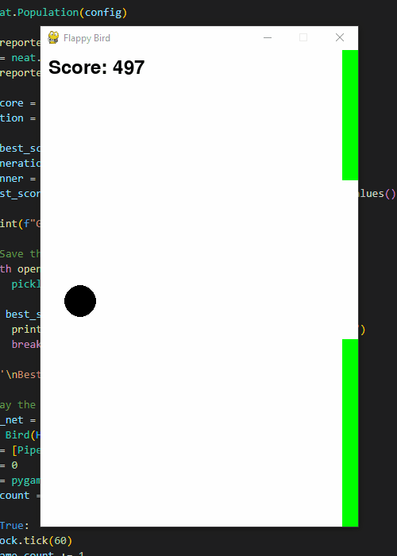

More Projects

Flappy Bird AI
For my first game AI project, I made an AI to play Flappy Bird using NEAT (NeuroEvolution of Augmenting Topologies). I trained the AI to control when the bird jumps. Inputs include: bird's height, distance to pipe, height of gap. The project features both a human-playable version and an AI-controlled version.
View Project